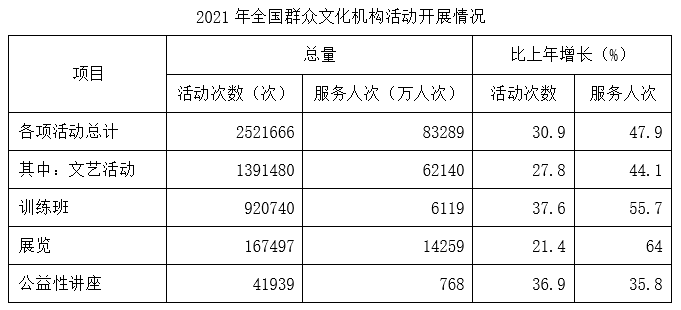
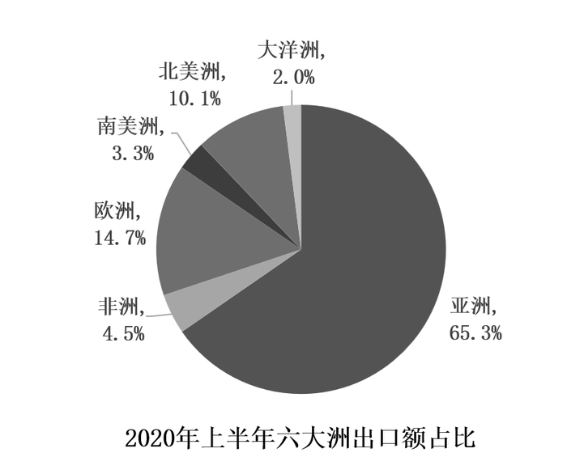
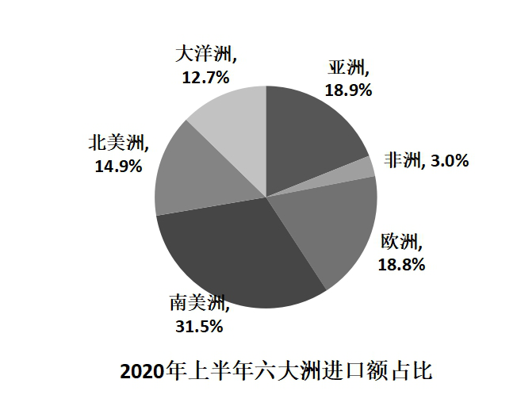
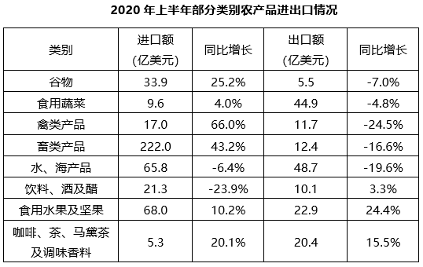

资料分析：综合资料（提升进阶）核心错题 · 共 47 题
【题目编号/题号】 ZL137 (229-5)书本第 228 229 页
【考点标签】 综合分析；综合资料
【材料】（无文本材料，见题干配图）
【题干】


下列不能从上述资料中推出的是（ ）。
【选项】
A2022年下半年，每月的体育彩票销售额均大于福利彩票销售额
B2022年，基诺型和视频型彩票销售额占彩票销售额的比重较上一年低
C2022年，竞猜型彩票的月销售额高于年内月平均销售额的月份只有2个
D2022年，全国彩票销售总额同比增加500亿元以上
听课笔记 / 决策路径：
【题目编号/题号】 ZL138 (230-6)书本第 229 230 页
【考点标签】 年均增长率；综合资料
【材料】
2021年，各地区各部门全面落实党中央、国务院关于实现数字乡村发展战略的决策部署，积极引入社会资 本投资建数字乡村。2021年全国用于县域农业农村信息化建设的社会资本投入为954.6亿元，县均社会资本投入 3588.8万元、乡村人均社会资本投入135.2元，分别比上年增长17.2%和24.0%。分区域看，东部地区社会资本投 入562.4亿元，占全国社会资本投入58.9%；中部地区社会资本投入193.8亿元；西部地区社会资本投入198.4亿 元。
【题干】


2019-2021年，全国县域农业农村信息化建设县均社会资本投入的年均增率约为（ ）。
【选项】
A10%
B21%
C32%
D43%
听课笔记 / 决策路径：
【题目编号/题号】 ZL139 (231-8)书本第 229 230 231 页
【考点标签】 现期倍数；综合资料
【材料】（材料同上，见本组上一题）
【题干】
2021年，东部地区县域农业农村信息化建设社会资本投入约是中、西部地区之和的（ ）倍。
【选项】
A1.43
B1.64
C1.80
D1.95
听课笔记 / 决策路径：
【题目编号/题号】 ZL140 (231-9)书本第 229 230 231 页
【考点标签】 一般增长率比较；综合资料
【材料】（材料同上，见本组上一题）
【题干】
2021年，关于县域农业农村信息化建设，下列数据同比增长率最大的是（ ）。
【选项】
A东部地区县均社会资本投入
B东部地区乡村人均社会资本投入
C西部地区县均社会资本投入
D西部地区乡村人均社会资本投入
听课笔记 / 决策路径：
【题目编号/题号】 ZL141 (232-14)书本第 231 232 页
【考点标签】 现期倍数；综合资料
【材料】
2021年，全国城市供水总量673.34亿立方米，同比增长6.96%；城市供水管道长度105.99万公里，同比增长 5.26%；人均日生活用水量185.03升；供水普及率99.38%，比上年增加0.39个百分点。天津、河北、上海、江 苏、浙江和广东6个省（市）城市供水普及率达到100%；福建、山东、湖北、广西、安徽、辽宁、宁夏、新 疆、内蒙古、山西、甘肃、河南、黑龙江、江西、云南和湖南16个省（区）超过99%（含）；西藏、青海、北 京、四川、贵州和陕西6个省（区、市）超过98%；重庆、吉林、海南3个省（市）和新疆建设兵团超过95%。
【题干】

图2中，城市人均日生活用水量最高的省份是用水量中位数省份的约：
【选项】
A1.78倍
B1.88倍
C1.95倍
D2.03倍
听课笔记 / 决策路径：
【题目编号/题号】 ZL142 (233-16)书本第 233 234 页
【考点标签】 现期倍数；综合资料
【材料】
五年来，我国积极推进网络强国和数字中国建设，着力深化数字经济与实体经济融合，为打造数字经济新 优势、增强经济发展新动能提供有力支撑。2022年，我国电信业务收入累计完成1.58万亿元，比上年增长8%， 较2018年增长超2800亿元。 2022年移动数据流量业务收入6397亿元，比上年增长0.3%，在电信业务收入中占比约为40.5%。数据中 心、云计算、大数据、物联网等新兴业务快速发展，对我国电信业务拉动作用持续增强。2022年新兴业务收入 达3072亿元，在电信业务收入中占比由上年的16.1%提升至19.4%。其中，数据中心、云计算、大数据、物联网 业务比上年分别增长11.5%、118.2%、58%和24.7%。
【题干】


2022年我国电信业务收入约为2018年的（ ）倍。
【选项】
A1.1
B1.2
C1.3
D1.4
听课笔记 / 决策路径：
【题目编号/题号】 ZL143 (235-2)书本第 234 235 页
【考点标签】 两期比重/比值比较；综合资料
【材料】
2018年全球茶叶产量585.6万吨，同比增长约3%，中国茶叶产量261.6万吨，同比增长0.7万吨。2018年，中 国茶叶国内销售量为191万吨，同比增长5.1%，国内销售总额为2661亿元，出口量为36.5万吨，同比增长2.8%， 出口总额为17.89亿美元（合人民币120亿元），同比增长（？）。
【题干】

设中国茶叶国内销售量和出口量与当年中国茶叶产量的比值分别为x和y，则2018年的x和y值与2017年分别相比：
【选项】
A两者均下降
B两者均上升
C只有x值上升
D只有y值上升
听课笔记 / 决策路径：
【题目编号/题号】 ZL144 (236-7)书本第 236 页
【考点标签】 现期倍数；综合资料
【材料】
2019年，我国快递业务量为635.2亿件，其中东部、中部、西部地区分别完成业务量506.3亿件、81.9亿件和 47亿件。全年快递业务收入7497.8亿元，其中东部、中部、西部地区的业务收入所占比重分别为80.2%、11.3% 和8.5%。东部、中部、西部地区业务收入占全国比重分别比上年上升0.2个百分点、上升0.1个百分点和下降0.3 个百分点。 2016-2018年，我国快递业务收入分别为3974.4亿元、4957.1亿元、6038.4亿元。
【题干】

2019年，中部地区平均每件快递产生的快递业务收入约是西部地区的多少倍？
【选项】
A0.5
B0.8
C1.3
D2.1
听课笔记 / 决策路径：
【题目编号/题号】 ZL145 (238-12)书本第 238 页
【考点标签】 一般增长率；综合资料
【材料】（无文本材料，见题干配图）
【题干】


与2009年相比，2019年城镇非私营单位就业人员平均工资增长的倍数约为：
【选项】
A1.5倍
B1.8倍
C2.8倍
D3.2倍
听课笔记 / 决策路径：
【题目编号/题号】 ZL146 (240-19)书本第 239 240 页
【考点标签】 现期平均数；综合资料
【材料】（无文本材料，见题干配图）
【题干】

2019年棉花种植面积排名前7的省区中，棉花单产超过1吨/公顷的省区有几个？
【选项】
A5
B4
C3
D2
听课笔记 / 决策路径：
【题目编号/题号】 ZL147 (242-9)书本第 241 242 页
【考点标签】 一般增长率比较；综合资料
【材料】
2019年，A市居民人均可支配收入28920元，比上年增长9.6%。按常住地分，城镇居民人均可支配收入 37939元；农村居民人均可支配收入15133元。全市居民人均消费支出20774元，比上年增长7.9%。按常住地 分，城镇居民人均消费支出25785元；农村居民人均消费支出13112元。全市居民恩格尔系数为32.1%，比上年 下降0.2个百分点。其中城镇为31.2%，农村为34.9%。
【题干】

将2019年A市①工伤保险、②生育保险和③失业保险按参保人数同比增速从高到低的顺序排列，以下正确的是：
【选项】
A①②③
B①③②
C②③①
D②①③
听课笔记 / 决策路径：
【题目编号/题号】 ZL148 (243-10)书本第 241 242 243 页
【考点标签】 现期比重；综合资料
【材料】
2019年，1043.0万残疾儿童及持证 残疾人得到基本康复服务，其中包括0～6岁残疾儿童18.1万人。 截至2019年末，全国已竣工的各级残疾人综合服务设施2341个，总建设规模584.5万平方米，总投资183.1 亿元；已竣工各级残疾人康复设施1006个，总建设规模414.2万平方米，总投资132.2亿元。
【题干】


以下饼图中，最能准确反映2019年A市全市居民工资性收入（白色）、经营净收入（灰色）、财产净收入（黑色）和转移净收入（斜线）占可支配收入比重关系的是：
【选项】
A
B
C
D
听课笔记 / 决策路径：
【题目编号/题号】 ZL149 (243-14)书本第 243 244 页
【考点标签】 现期倍数；综合资料
【材料】（材料同上，见本组上一题）
【题干】


截至2019年末，全国平均每个已竣工的残疾人综合服务设施建设规模约是已竣工残疾人康复设施的多少倍？
【选项】
A0.6
B0.8
C1.2
D1.7
听课笔记 / 决策路径：
【题目编号/题号】 ZL150 (244-13)书本第 243 244 页
【考点标签】 两集合容斥；综合资料
【材料】（材料同上，见本组上一题）
【题干】
如提供视力残疾康复服务的残疾人康复机构中，同时提供听力言语残疾康复服务的机构比不提供该服务的机构多20%，则2019年末全国有多少家残疾人康复机构不提供以上两种康复服务中的任意一种？
【选项】
A不到7300家
B7300～7600家之间
C7600～7900家之间
D超过7900家
听课笔记 / 决策路径：
【题目编号/题号】 ZL151 (245-17)书本第 245 页
【考点标签】 一般增长率比较；综合资料
【材料】
2019年，我国电信业务收入累计完成金额1.31万亿元，固定通信业务收入完成4161亿元，同比增长9.5%， 在电信业务收入中所占比重较上年提高2.6个百分点；移动通信业务实现收入8942亿元，同比减少2.9%。 2014~2019年，全国移动电话4G及非4G基站数变化情况如下图所示：
【题干】

2015~2019年，移动电话基站总量同比增速最快的年份是：
【选项】
A2015年
B2016年
C2017年
D2019年
听课笔记 / 决策路径：
【题目编号/题号】 ZL152 (246-19)书本第 245 246 页
【考点标签】 现期计算；综合资料
【材料】（材料同上，见本组上一题）
【题干】
假设4G基站数保持2019年同比增量不变，且由于5G技术的快速普及，2020年开始每年非4G基站同比增量均为300万个。问哪一年4G基站数占移动电话基站总量的比重将下降到50%以下？
【选项】
A2021
B2022
C2023
D2024
听课笔记 / 决策路径：
【题目编号/题号】 ZL153 (246-20)书本第 245 246 页
【考点标签】 综合分析；综合资料
【材料】（材料同上，见本组上一题）
【题干】
能够从上述资料中推出的是：
【选项】
A2019年移动通信业务收入占电信业务收入的比重同比下降了2.9个百分点
B2019年固定通信业务收入同比增长了400多亿元
C2015~2019年间，非4G基站数量逐年递增
D2015~2019年间，4G基站数同比增速和增量最大的年份不是同一个
听课笔记 / 决策路径：
【题目编号/题号】 ZL154 (247-2)书本第 246 247 页
【考点标签】 一般增长率；综合资料
【材料】
2019年间，4G基站数同比增速和增量最大的年份不是同一个 截止2022年12月，我国网民规模约为10.67亿，较2021年12月新增网民约3549万，互联网普及率达75.6%， 较2021年12月提升2.6个百分点。我国网民使用手机上网的比例达99.8%，较2021年12月增加0.1个百分点；使用 电视上网的比例为25.9%；使用台式电脑、笔记本电脑、平板电脑上网的比例分别为34.2%、32.8%和28.5%。我 国城镇网民规模约为7.59亿，占网民整体的71.1%，农村网民规模约为3.08亿，较2021年12月增长约2371万，占 网民整体的28.9%。 2022年12月，20-29岁、30-39岁、40-49岁网民占比分别为14.2%、19.6%和16.7%；50岁及以上网民群体占 比由2021年12月的26.8%提升至30.8%，互联网进一步向中老年群体渗透。 2022年12月，线上办公用户规模约达5.4亿，较2021年12月增加7078万户，占整体网民的50.6%。互联网医 疗用户规模约达3.63亿，较2021年12月增加约6466万，占网民整体的34%。农村地区在线教育和互联网医疗用 户分别占农村网民整体的31%和21.5%，较上年分别增加2.7%和4.1%。
【题干】

截至2022年12月，我国城镇网民规模同比增速约为：
【选项】
A1.2%
B1.6%
C2.0%
D2.4%
听课笔记 / 决策路径：
【题目编号/题号】 ZL155 (247-3)书本第 246 247 页
【考点标签】 增长量计算；综合资料
【材料】（材料同上，见本组上一题）
【题干】
2019-2022年，当年12月我国城镇与农村互联网普及率同比增量相差在1个百分点以内的年份有几个？
【选项】
A1
B2
C3
D4
听课笔记 / 决策路径：
【题目编号/题号】 ZL156 (252-17)书本第 251 252 页
【考点标签】 比值计算；综合资料
【材料】（无文本材料，见题干配图）
【题干】


2022年全国人均体育场地面积同比增量约为2018~2022年年均增长量的：
【选项】
A108.7%
B110.5%
C115.6%
D118.2%
听课笔记 / 决策路径：
【题目编号/题号】 ZL157 (252-18)书本第 251 252 页
【考点标签】 现期比重；综合资料
【材料】
【题干】
2022年，按体育场地类型的数量，从大到小排位第二的约占全国体育场地数量的：
【选项】
A5.4%
B23.2%
C29.6%
D62.1%
听课笔记 / 决策路径：
【题目编号/题号】 ZL158 (252-19)书本第 251 252 页
【考点标签】 现期比重；综合资料
【材料】（无文本材料，见题干配图）
【题干】
2022年，按运动项目划分场地数量之和最接近全国体育场地数量25%的是：
【选项】
A游泳场地+全民健身路径
B健身步道+全民健身路径
C篮球场地+滑雪场地
D排球场地+乒乓球场地
听课笔记 / 决策路径：
【题目编号/题号】 ZL159 (252-20)书本第 251 252 页
【考点标签】 综合分析；综合资料
【材料】（无文本材料，见题干配图）
【题干】
能够从上述资料推出的是：
【选项】
A2022年全国每个体育场地平均面积大于900平方米
B2022年足球、篮球、排球场地数量之和少于体育健身场地数量
C2022年全国体育场地数量同比增速比2021年提高了2个百分点
D2022年全国主要分项体育场地数量占全国体育场地数量的95%以上
听课笔记 / 决策路径：
【题目编号/题号】 ZL160 (253-4)书本第 252 253 页
【考点标签】 一般增长率；综合资料
【材料】（无文本材料，见题干配图）
【题干】


假设羊肉每年以零售价格全部售罄，那么，2021年羊肉销售收入同比增长约：
【选项】
A5.2%
B10.4%
C17.6%
D22.7%
听课笔记 / 决策路径：
【题目编号/题号】 ZL161 (255-7)书本第 254 255 页
【考点标签】 平均数增长量；综合资料
【材料】
2022年，我国废钢铁、废有色金属等十个品种（详见表格）再生资源回收总重量约为37067.7万吨，同比下 降2.62%，回收总金额约为13140.6亿元，同比下降4.05%。2022年废有色金属中废铅回收重量同比增长5.56%。 2022年我国报废机动车回收数量399.1万辆，同比增长32.9%，回收数量占我国机动车保有量的9.57‰。
【题干】


相比2021年，2022年我国废纸平均回收价格（平均回收价格 ）：
【选项】
A下调约170元/吨
B下调约347元/吨
C上调约170元/吨
D上调约347元/吨
听课笔记 / 决策路径：
【题目编号/题号】 ZL162 (255-10)书本第 254 255 页
【考点标签】 综合分析；综合资料
【材料】（材料同上，见本组上一题）
【题干】
能够从上述资料中推出的是：
【选项】
A截止2022年底，我国机动车保有量约为4170万辆
B2022年我国十个品种再生资源平均回收价格最高的是废有色金属
C2021年回收金额排前两名的再生资源回收金额之和的比值超过75%
D2022年除废铅以外的废有色金属回收重量总和比2021年的有所下降
听课笔记 / 决策路径：
【题目编号/题号】 ZL163 (257-11)书本第 256 257 页
【考点标签】 基期和差；综合资料
【材料】
其中，机床工具商品进口105.2亿 美元，同比增长23.7%；出口137.4亿美元，同比增长40.8%。 从进口来源来看，2021年1～9月进口来源前三位分别是：日本34.5亿美元，同比增长37.8%；德国 22.2亿美 元，同比增长11.0%；中国台湾14.3亿美元，同比增长36.1%。 从出口去向来看，2021年1～9月出口去向前三位分别是：美国17.5亿美元，同比增长27.4%；越南10.5亿美 元，同比增长35.4%；印度8.8亿美元，同比增长67.8%。
【题干】


2020年1～9月，我国机床工具贸易状况为：
【选项】
A顺差10亿美元以上
B顺差不到10亿美元
C逆差10亿美元以上
D逆差不到10亿美元
听课笔记 / 决策路径：
【题目编号/题号】 ZL164 (257-14)书本第 256 257 页
【考点标签】 简单计算；综合资料
【材料】（材料同上，见本组上一题）
【题干】
2021年1～9月，下列产品中我国对外贸易顺差最大的是：
【选项】
A金属切削机床
B磨料磨具
C切削刀具
D机床功能部件（含零件）
听课笔记 / 决策路径：
【题目编号/题号】 ZL165 (257-15)书本第 256 257 页
【考点标签】 综合分析；综合资料
【材料】（材料同上，见本组上一题）
【题干】
能够从上述资料中推出的是：
【选项】
A2021年1～9月，我国机床工具自日本进口同比增量是德国增量的5倍多
B2021年1～9月，进口额同比增速最高的机床工具产品类型是金属切削机床
C2021年1～9月，进出口总额超过30亿美元的机床工具产品有3种
D2020年1～9月，我国机床工具对印度出口额不到5亿美元
听课笔记 / 决策路径：
【题目编号/题号】 ZL166 (260-4)书本第 256 260 页
【考点标签】 现期平均数；综合资料
【材料】
据国家统计局数据显示，2021年我国研究与试验发展（R&D）经费支出27864亿元，同比增长14.2%，占国 内生产总值之比为2.44%，其中基础研究经费1696亿元。国家自然科学基金共资助4.87万个项目。2021年全年授 予专利权460.1万件，同比增长26.4%；PCT专利申请受理量7.3万件。截至2021年末，有效专利1542.1万件，其 中境内有效发明专利270.4万件。每万人口高价值发明专利拥有量7.5件。全年商标注册773.9万件，同比增长 34.3%。全年共签订技术合同67万项，技术合同成交金额37294亿元，同比增长32.0%。
【题干】


2017~2021年，我国研究与试验发展经费支出超过年平均值的年份的个数是：
【选项】
A1个
B2个
C3个
D4个
听课笔记 / 决策路径：
【题目编号/题号】 ZL167 (260-5)书本第 259 260 页
【考点标签】 综合分析；综合资料
【材料】（材料同上，见本组上一题）
【题干】
下列说法正确的是：
【选项】
A2021年，我国基础研究经费占R&D经费的比重不到5%
B2021年，全国有效专利中有效发明专利不到20%
C2021年，专利授权数比上一年增加不超过100万件
D2021年，我国技术合同成交金额比上一年增加超过万亿元
听课笔记 / 决策路径：
【题目编号/题号】 ZL168 (261-10)书本第 260 261 页
【考点标签】 综合分析；综合资料
【材料】
2018年第一季度，共有9586家星级饭店通过省级旅游主管部门审核，全国星级饭店第一季度的营业收入为 487.11亿元，同比增长2.43%。餐饮收入为208.24亿元，客房收入为209.12亿元。 第一季度全国50个重点旅游城市共有3636家星级饭店通过省级旅游主管部门数据审核，第一季度全国50个 重点旅游城市星级饭店营业收入为320.19亿元。
【题干】

下列能够从上述资料中推出的是：
【选项】
A2017年第一季度，全国星级饭店营业收入超过480亿元
B2018年第一季度，五星级饭店数量占全国星级饭店的一成以上
C2018年第一季度，全国二星级饭店的客房收入比餐饮收入高2亿多元
D2018年第一季度，全国50个重点旅游城市平均每家星级饭店营业收入高于全国平均水平
听课笔记 / 决策路径：
【题目编号/题号】 ZL169 (262-12)书本第 262 263 页
【考点标签】 一般增长率；综合资料
【材料】
实现利润总额10676 亿元，同比增长7.8%；人均实现业务收入115.8万元，同比增长8.6%。 分领域看，2020年，软件产品实现收入22758亿元，同比增长10.1%；其中，工业软件产品实现收入1974亿 元，增长11.2%。信息技术服务实现收入49868亿元，比上年同期增加6579亿元；其中，电子商务平台技术服务 收入9095亿元，同比增长10.5%；云服务、大数据服务共实现收入4116亿元，同比增长11.1%。信息安全产品和 服务实现收入1540亿元，同比增长10.0%，增速较上年回落2.4个百分点。嵌入式系统软件实现收入7492亿元， 比上年同期增加803亿元，增速较上年提高4.2个百分点。
【题干】

2014~2020年，我国软件和信息技术服务业完成业务收入同比增速超过15%的年份有几个？
【选项】
A2
B3
C4
D5
听课笔记 / 决策路径：
【题目编号/题号】 ZL170 (264-20)书本第 263 264 265 页
【考点标签】 综合分析；综合资料
【材料】
其中，住宅 投资64352亿元，增长9.2%。 2014年，全国商品房销售面积120649万平方米，比上年下降7.6%，降幅比1—11月份收窄0.6个百分点， 2013年为增长17.3%；商品房销售额76292亿元，下降6.3%，降幅比1—11月份收窄1.5个百分点，2013年为增长 26.3%。 2014年，东部地区商品房销售面积54756万平方米，比上年下降13.7%，降幅比1—11月份收窄1.3个百分 点；销售额43607亿元，下降11.6%，降幅收窄2.1个百分点。中部地区商品房销售面积33824万平方米，下降 3.9%，降幅收窄0.4个百分点；销售额16558亿元，增长0.2%，1—11月份为下降0.9%。西部地区商品房销售面 积32068万平方米，增长0.6%，增速回落0.6个百分点；销售额16127亿元，增长3.5%，增速回落0.6个百分点。
【题干】

能够从上述资料中推出的是：
【选项】
A2013年东部地区的商品房销售额超过50000亿元
B2014年我国东部地区住宅投资额低于中、西部地区之和
C2014年我国东部地区房地产投资额是西部地区的3倍多
D2014年住宅投资占房地产开发投资的比重不到七成
听课笔记 / 决策路径：
【题目编号/题号】 ZL171 (265-1)书本第 265 266 页
【考点标签】 现期倍数；综合资料
【材料】
2022年上半年，我国软件与信息技术服务业总收入同比增长10.9%，增速较1~5月份提高0.3个百分点。软件 与信息技术服务业收入中，软件产品收入、信息技术服务收入、信息安全收入、嵌入式系统软件收入同比分别 增长10.2%、12%、11.4%和5%。信息技术服务收入中，云计算、大数据服务收入4790亿元，同比增长9.3%；集 成电路设计收入1279亿元，同比增长15.2%。 2022年上半年，我国东部、中部、西部、东北地区完成软件与信息技术服务业总收入同比增速分别为 10.2%、14.4%、15.9%和6.3%。
【题干】

2022年二季度，我国中部地区软件与信息技术服务业总收入约是东北地区的：
【选项】
A不到2倍
B2~3倍之间
C3~4倍之间
D4倍以上
听课笔记 / 决策路径：
【题目编号/题号】 ZL172 (266-2)书本第 265 266 页
【考点标签】 现期比重；综合资料
【材料】（材料同上，见本组上一题）
【题干】
2022年上半年，我国东部地区信息技术服务收入在全国软件与信息技术服务业总收入中的占比在以下哪个范围内？
【选项】
A不到50%
B50%~60%之间
C60%~70%之间
D超过70%
听课笔记 / 决策路径：
【题目编号/题号】 ZL173 (266-3)书本第 265 266 页
【考点标签】 简单比较；综合资料
【材料】（材料同上，见本组上一题）
【题干】
在全国4个地区中，2022年二季度四类软件与信息技术服务业收入均高于一季度水平的有几个？
【选项】
A4
B3
C2
D1
听课笔记 / 决策路径：
【题目编号/题号】 ZL174 (266-5)书本第 265 266 页
【考点标签】 综合分析；综合资料
【材料】（材料同上，见本组上一题）
【题干】
能够从上述资料中推出的是：
【选项】
A2021年上半年，我国东北地区软件与信息技术服务业月均收入不足150亿元
B2022年6月，我国软件与信息技术服务业总收入增速超过10%
C2022年上半年，我国嵌入式系统软件收入同比增量小于信息安全收入同比增量
D2022年上半年，我国集成电路设计收入占信息技术服务收入比重低于上年同期
听课笔记 / 决策路径：
【题目编号/题号】 ZL175 (268-9)书本第 266 267 268 页
【考点标签】 简单比较；综合资料
【材料】
2012~2021的10年间，辽宁、天津、河北、山东、江苏、上海、浙江、福建、广东、广西、海南11个沿海 省市的核电、火电、钢铁、石化等行业的海水冷却用水量稳步增长（图1），其中浙江、福建、广东3省海水冷 却用水量相对较高（表1）。截至2021年底，11个沿海省市共建有海水冷却工程22个，2021年全国11个沿海省 市海水冷却工程年总循环量为169.5亿吨。
【题干】


2021年海水冷却用水量低于海水冷却工程年总循环量的沿海省市共有几个：
【选项】
A5个
B6个
C7个
D8个
听课笔记 / 决策路径：
【题目编号/题号】 ZL176 (268-10)书本第 266 267 268 页
【考点标签】 综合分析；综合资料
【材料】（材料同上，见本组上一题）
【题干】
可以从上述资料推出的是：
【选项】
A2021年全国11个沿海省份海水冷却用水量前4名依次为：广东、浙江、福建、江苏
B2012~2021年浙江、广东年海水冷却用水量之和均超过全国同期的60%
C2012~2021年表1的8个省市中福建的海水冷却用水量年平均增速最快
D2012~2021年间，广东的海水冷却用水量均为辽宁同期的3倍以上
听课笔记 / 决策路径：
【题目编号/题号】 ZL177 (269-15)书本第 268 269 页
【考点标签】 综合分析；综合资料
【材料】
2021年间，广东的海水冷却用水量均为辽宁同期的3倍以上 2017年1-4月，T地区批发和零售业商品销售总额为15220亿元，同比增长10.5%，其中，限额以上商品销售 额达到11107亿元，同比增长10%；4月份，T地区批发和零售业商品销售总额和限额以上商品销售额分别为3339 亿元和2554亿元。
【题干】

关于2017年T地区限额以上商品销售额，能够从资料中推出的是：
【选项】
A4月批发业及零售业销售额均低于一季度月均数值
B一季度，外商及港澳台商企业销售额同比增长100亿元以上
C一季度，小微型企业销售额同比增量超过大型企业和中型企业之和
D1-4月，限额以上商品销售额占批发和零售业商品销售总额的比重较上年同期有所提升
听课笔记 / 决策路径：
【题目编号/题号】 ZL178 (271-17)书本第 270 271 页
【考点标签】 现期平均数；综合资料
【材料】
2024年2月，我国公共充电桩数量为282.6万台，环比增加4.4万台，同比增长51.3%。其中直流充电桩123.9 万台，环比增长2.1%；交流充电桩158.6万台，环比增长1.2%。
【题干】


2023年下半年，我国月均新增公共充电桩约多少万台？
【选项】
A6.5
B7.9
C8.8
D9.6
听课笔记 / 决策路径：
【题目编号/题号】 ZL179 (271-19)书本第 270 271 页
【考点标签】 两期比重；综合资料
【材料】（材料同上，见本组上一题）
【题干】
已知截至2024年2月广东公共充电桩数量同比增加17.2万台，则同期广东公共充电桩数量占全国比重同比：
【选项】
A上升3个百分点以上
B上升不到3个百分点
C下降3个百分点以上
D下降不到3个百分点
听课笔记 / 决策路径：
【题目编号/题号】 ZL180 (272-8)书本第 271 272 页
【考点标签】 比值计算；综合资料
【材料】
2021年末，全国共有公共图书馆3215个，比上年末增加3个；从业人员59301人，增加1321人；其中具有高 级职称人员7413人，占12.5%；具有中级职称人员18979人，占32.0%。 全年公共图书馆实际持证读者10313.93万人，比上年增长0.6%；总流通人次74613.69万，增长37.8%；书刊 文献外借58730.15万册次，增长39.5%；外借人次23809.24万，增长36.3%。全年共为读者举办各种活动202568 次，比上年增长34.4%；参加人次11892.49万，增长28.2%。 2021年末，全国共有群众文化机构43531个，比上年末减少156个。其中乡镇综合文化站32524个，减少301 个。年末全国群众文化机构从业人员190007人，比上年末增加4931人。其中具有高级职称的人员7531人，占 4.0%；具有中级职称人员17947人，占9.4%。
【题干】
2021年，平均每座公共图书馆的从业人数，与平均每个群众文化机构的从业人数之比在以下哪个范围内：

【选项】
A3.0-3.5
B3.5-4.0
C4.0-4.5
D4.5-5.0
听课笔记 / 决策路径：
【题目编号/题号】 ZL181 (274-8)书本第 273 274 页
【考点标签】 基期比较；综合资料
【材料】
2020年上半年，我国农产品进出口总额达1159.0亿美元。农产品进口额为807.5亿美元，同比增长13.2%。 受新冠肺炎疫情影响，我国农产品出口额同比下降3.8%，为351.5亿美元。 在我国的农产品进口中，除大洋洲农产品进口额同比下降1.9个百分点外，其余各大洲的农产品进口额均有 所增加；欧洲国家或地区农产品进口额增幅最大，达28.4%。农产品出口中，对亚洲国家或地区的出口额最 高，达229.7亿美元，较2019年同期下降了3.7个百分点。 随着我国居民饮食结构的调整，居民对肉类食品的需求量逐年增加。2020年上半年畜类产品进口额同比增长 43.2%，对农产品进口额的增长贡献超7成。我国农产品出口最多的两大类别分别是食用蔬菜和水、海产品，合 计出口额达93.6亿美元，占农产品出口总额的26.6%。
【题干】
以下农产品类别中，2019年上半年我国进出口总额最高的是：



【选项】
A食用蔬菜
B禽类产品
C饮料、酒及醋
D咖啡、茶、马黛茶及调味香料
听课笔记 / 决策路径：
【题目编号/题号】 ZL182 (275-11)书本第 274 275 页
【考点标签】 增长量计算；综合资料
【材料】
2019年全国房地产开发投资132194亿元，比上年增长9.9%，增速比上年加快0.4个百分点。其中，住宅投资 97071亿元，增长13.9%，增速比上年加快0.5个百分点。2019年，全国商品房销售面积171558万平方米，比上年 下降0.1%。其中，住宅销售面积增长1. 5%，办公楼销售面积下降14.7%，商业营业用房销售面积下降15.0%。 商品房销售额159725亿元，增长6. 5%，增速比上年回落5.7个百分点。其中，住宅销售额增长10.3%，办公楼销 售额下降15.1%，商业营业用房销售额下降16.5%。
【题干】


2018年全国房地产开发投资比上年增长：
【选项】
A48114亿元
B11427亿元
C10436亿元
D10278亿元
听课笔记 / 决策路径：
【题目编号/题号】 ZL183 (277-20)书本第 276 277 278 页
【考点标签】 综合分析；综合资料
【材料】（材料同上，见本组上一题）
【题干】


能够从上述资料中推出的是：
【选项】
A2013年，采矿业法人单位占全国法人单位的比重超过1%
B2013—2018年间，机关、事业法人单位年均增加不到1万个
C2013年，批发和零售业法人单位数量是教育法人单位数量的7倍以上
D2013—2018年间，科学研究和技术服务业是法人单位数年均增速最快的行业
听课笔记 / 决策路径：